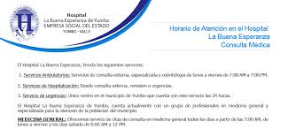

HOSPITAL LA BUENA ESPERANZA
| ver Ejercicio #1 |
| ver Ejercicio #2 |
| ver Ejercicio #3 |
| ver Ejercicio #4 |
| ver Ejercicio css #5 |
|
Política para la Dirección Para cumplir con sus funciones y responsabilidades, el Gerente y su Equipo Directivo se comprometen a administrar el Hospital bajo los principios y valores éticos aquí definidos, gestionar eficientemente los recursos públicos, rendir cuentas, ser eficaces en la realización de sus cometidos, coordinar y colaborar con los demás entes públicos y privados y responder efectivamente a las necesidades y expectativas de sus clientes y usuarios; para ello llevarán a cabo las siguientes prácticas: |
 |
 |
OBJETIVO INSTITUCIONAL:
El Hospital La Buena Esperanza de Yumbo tiene
como objetivo Institucional la Prestación de los servicios de salud
de
excelencia y centrados en el usuario que contribuyan a mejorar la calidad
de vida de los Yumbeños y su área de influencia.
|  |
FUNCIONES INSITUCIONALES:
Son funciones del Hospital La Buena Esperanza de Yumbo E.S.E,
corresponden al objeto social o su razón de ser
Propender a la permanente difusión de la Constitución Política,
resaltando los principios que rigen la función pública y administrativa.
Promover la unidad nacional, la descentralización,
la integración territorial y la coopera ración interinstitucional, con miras a que las diversas regiones del País dispongan del
Talento Humano y de los conocimientos y tecnologías administrativas apropiadas que
les permitan atender adecuadamente sus necesidades.
Formular
el Plan Nacional de capacitación de servidores públicos de acuerdo con las directrices que trace el
gobierno nacional a través del
Departamento Administrativo de la Función Pública.
Prestar
servicios de salud cumpliendo unos requerimientos básicos consignados en el sistema
obligatorio de garantía de la calidad.
Realizar en los términos de Ley
concursos para ingresos al servicio público, brindar capacitación y asesoría en materia de
Carrera Administrativa.
Fortalecer y
ampliar relaciones interinstitucionales de cooperación con organismos afines.
Las demás que
le señale la constitución y la Ley de acuerdo con su misión y naturaleza.